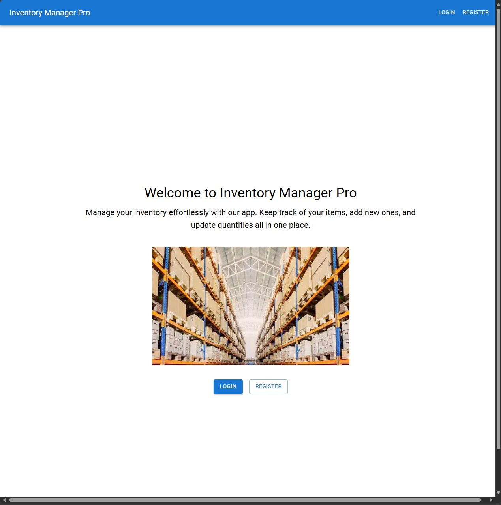
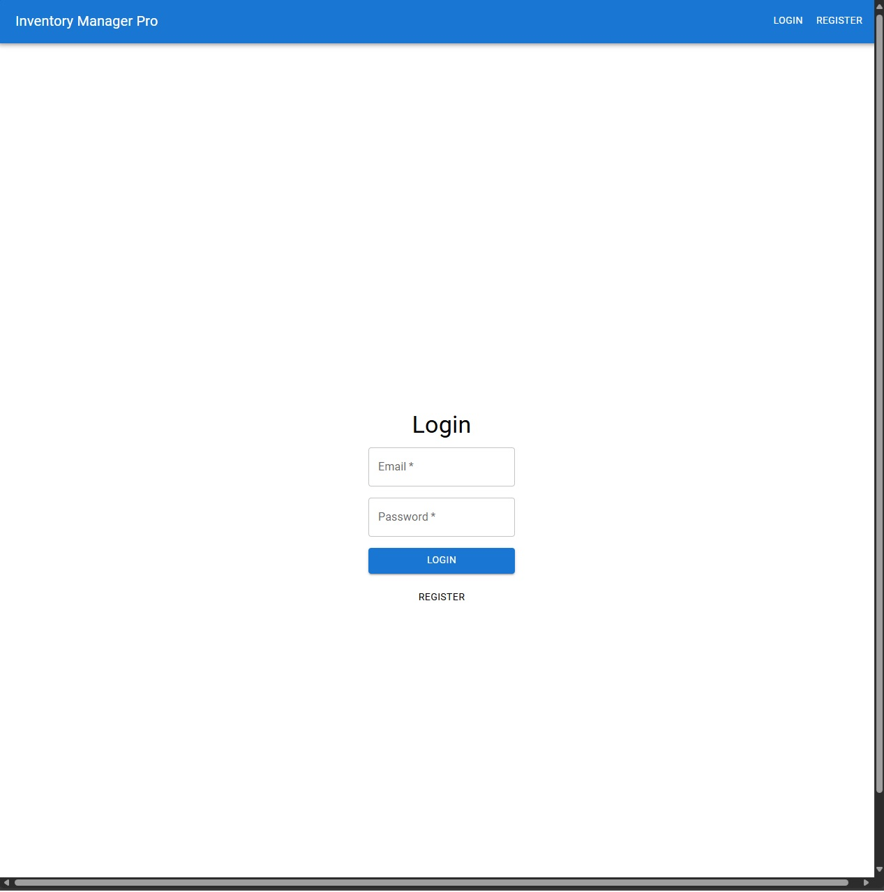
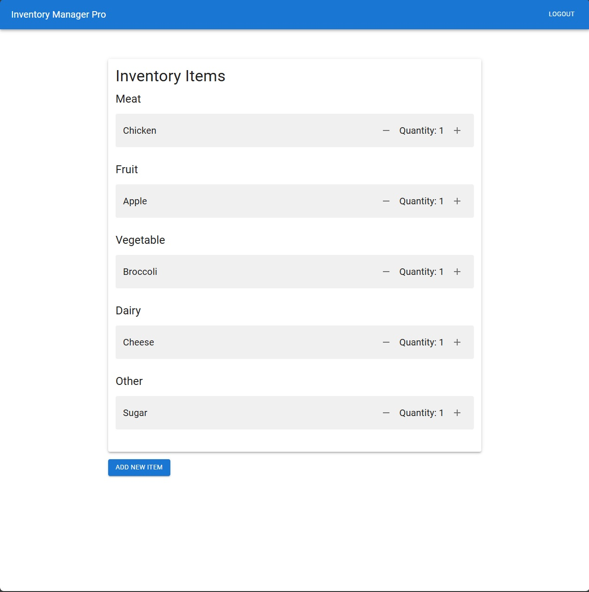
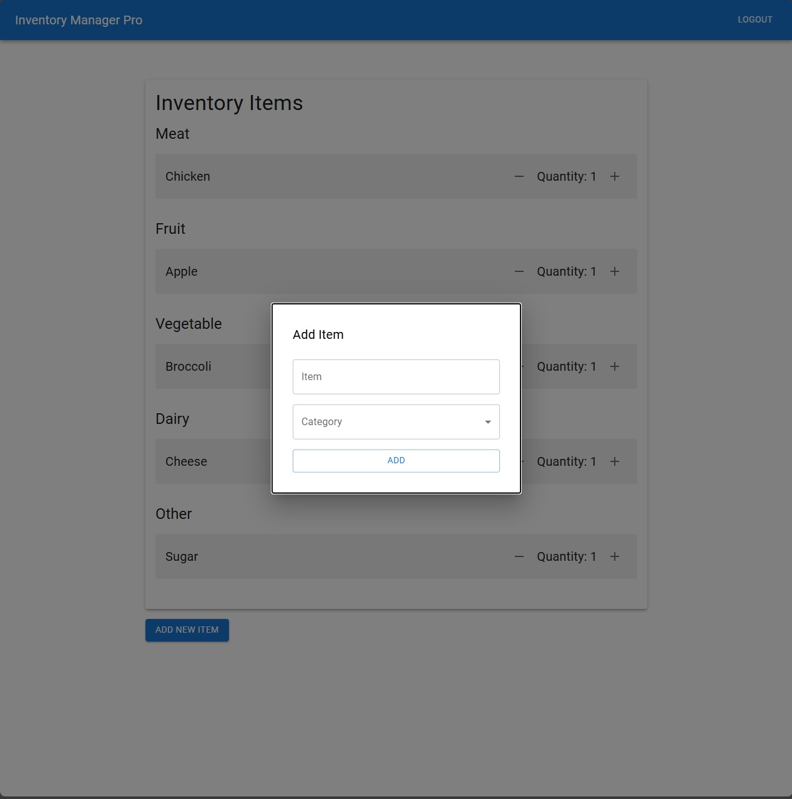

Inventory Manager Pro
Project Overview
Introduction:
- Title: Inventory Manager Pro
- Duration: July 2024 - August 2024
- Role: Full Stack Developer
- Team: Solo Project
Summary:
Inventory Manager Pro is a sophisticated inventory management system designed to provide a seamless experience for tracking and categorizing items. Leveraging cutting-edge web development technologies, this application ensures efficient and user-friendly management of inventory.
Features:
User Authentication:
- Secure Login & Registration: Users can securely register and log in using Firebase Authentication, ensuring their data is protected.
- Password Recovery: Provides functionality for users to recover their accounts in case they forget their passwords.
Inventory Management:
- Add, Edit, and Delete Items: Users can easily manage their inventory items with intuitive controls for adding new items, editing existing ones, and deleting those no longer needed.
- Categorization: Items can be organized into customizable categories, allowing users to group similar items together for better organization.
Real-time Data Synchronization:
- Instant Updates: Changes made to the inventory are reflected immediately across all user sessions, thanks to Firebase’s real-time database capabilities.
- Offline Support: The application provides offline support, ensuring users can continue to manage their inventory even without an internet connection. Changes are synced once the connection is restored.
User Interface:
- Responsive Design: The application is fully responsive, providing an optimal user experience on both desktop and mobile devices.
- Dashboard Overview: A comprehensive dashboard gives users a quick overview of their inventory, including total items, categories, and recent activity.
Key Decisions and Implementation:
- User Interface: Designed an intuitive and user-friendly interface using React.js and Next.js.
- Version Control: Used Git for version control, ensuring smooth collaboration and code management.
Technologies and Tools:
- Next.js: Utilized for server-side rendering and enhancing performance, providing a fast and responsive user experience.
- React.js: Employed for building dynamic and interactive user interfaces, ensuring component-based architecture for maintainability.
- Firebase: Adopted for its robust and scalable backend services, including real-time database, authentication. This allows for efficient data storage, secure user authentication, and instant updates across the application.
- Git: Implemented for version control to track changes and collaborate effectively.
- Vercel: Utilized vercel to host and deploy the website for public use.
Project Achievements
- Positive User Feedback: High user satisfaction with the platform's ease of use and relevance of suggestions.
Gallery/Visuals
Landing Page:
Login/Register Page:
Main Iventory Page:
Adding/Editing Items:
- Challenge: Ensuring real-time data synchronization across the application.
- Solution: Leveraged Firebase’s real-time database capabilities to provide instant updates, ensuring that all users see the most current data without needing to refresh the page.
- Challenge: Designing a user-friendly interface that accommodates a variety of items.
- Solution: Used Material-UI components to create a clean and intuitive layout, incorporating user feedback to refine and enhance the user experience.
Future Directions
- Reporting: Adding features for generating detailed inventory reports, providing insights into item usage, stock levels, and trends.
- Mobile App: Developing a dedicated mobile application for both Android and iOS platforms, ensuring users can manage their inventory on the go.
- Advanced Search: Implementing advanced search functionalities, including filters and sorting options, to help users quickly locate specific items within their inventory.
- Integration with Barcode Scanning: Adding support for barcode scanning to streamline the process of adding and managing items in the inventory.
Conclusion:
Inventory Manager Pro is a testament to the ability to build a full-featured web application using modern development frameworks and tools. The project showcases skills in full-stack development, real-time data handling, responsive design, and user-centric feature development. Through this project, the goal of creating an efficient and intuitive inventory management system has been successfully achieved, with numerous opportunities for future enhancements.
Source Code
View on GitHubTry It Out Yourself!
Link to Project